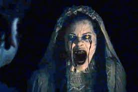

Esta leyenda, de origen prehispánico, es una de las más conocidas en México. Aunque se desconoce dónde se originó ni cuándo, este personaje se ha convertido en un espectro muy importante en la identidad cultural de Hispanoamérica.
La Llorona cuenta con diferentes versiones y se ha transmitido de generación en generación, muchas veces, con la intención de que los niños obedezcan a sus padres.
Dice la leyenda que hace muchos años aparecía en Xochimilco la figura de una mujer vestida de blanco, la cual cruzaba las calles de la ciudad mientras lamentaba:
¡Ay, mis hijos!
Los habitantes de la ciudad decían que se trataba de una pobre mujer que había sufrido por un hombre que la había abandonado.
Entonces decidió ahogar a sus hijos en un río y, arrepentida, intentó quitarse ella la vida. Pronto fue apodada como la Llorona.
Dicen que, a día de hoy, el espectro sigue apareciendo por las noches y recorre la ciudad con su vestimenta blanca.
Aún hoy se puede oír su desgarrador lamento.